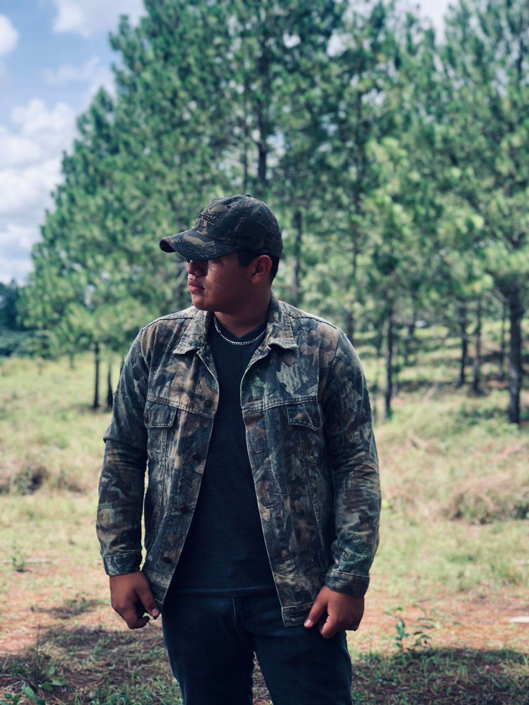

Lo más relevante:
Marco es un joven interesado en la tecnología y la programación. Siempre busca aprender más en su área de interés. Además, disfruta de videojuegos como Halo, Fortnite y Warzone.
Características sobre Marco Godoy
Marco estudia Ingeniería en Ciencias de la Computación en la Universidad Católica de Honduras. Siempre ha tenido una pasión por la tecnología y la informática desde pequeño.
También puedes conocerlo mejor en sus redes sociales:
- Facebook: Betio Godoy
- Instagram: betio_g34
- X: Betio Godoy
- Twitch: Betio_G34